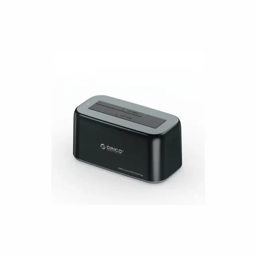
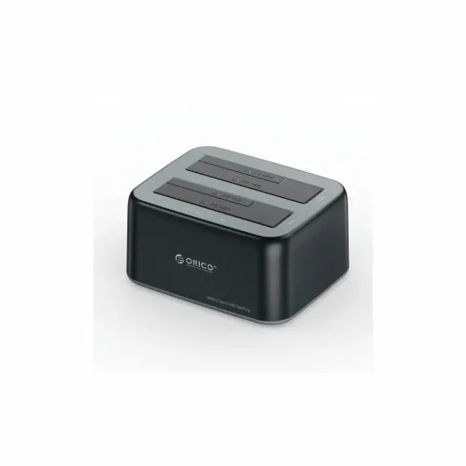
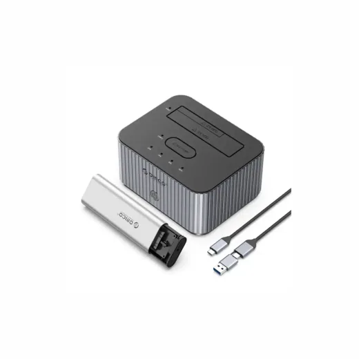
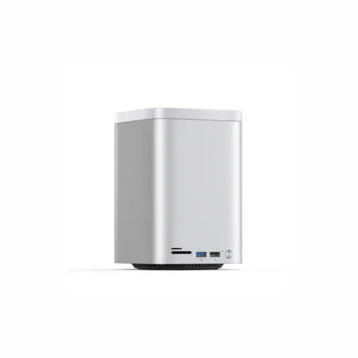

Inicio › Otros de tecnología y hogar

DOCK · Modelo 6819C3V1USBKBPHW
Dock Sata 3.0/USB-C para Disco Duro 2.5/3.5 Orico 6819C3-V1-US-BK-BP-HW Negro
L 750
En Sycom
Precio en cada tienda
| Tienda | Precio | Antes | Disponibilidad | |
|---|---|---|---|---|
| Sycom | L 750 | — | Disponible | Ver en tienda › |
Precios referenciales tomados de cada tienda el 14 de noviembre de 2026. El precio válido es el que muestra la tienda al comprar.
Otros otros de tecnología y hogar DOCK

Dock Sata 3.0/USB-C para Disco Duro 2.5/3.5 Orico 6829C3-V1-US-BK-BP-HWL 1,150En Sycom Dock Sata 3.0/USB-C para Clonar Disco Duro 2.5/3.5 Orico 6829C3-C-US-BK-BP NegroL 1,995En Sycom
Dock Sata 3.0/USB-C para Clonar Disco Duro 2.5/3.5 Orico 6829C3-C-US-BK-BP NegroL 1,995En Sycom
Dock SatA 3.0/USB-C para Clonar Disco Duro 2.5/3.5/M.2 NVME Orico IT28E-C-US-GY-BPL 2,995En Sycom
Dock Almacenamiento USB-C/USB-3.0 2.5/3.5/NVME/NGFF/2280/2260/2242/2230 Orico M435-V1-US-SV-BP SilverL 4,200En Sycom